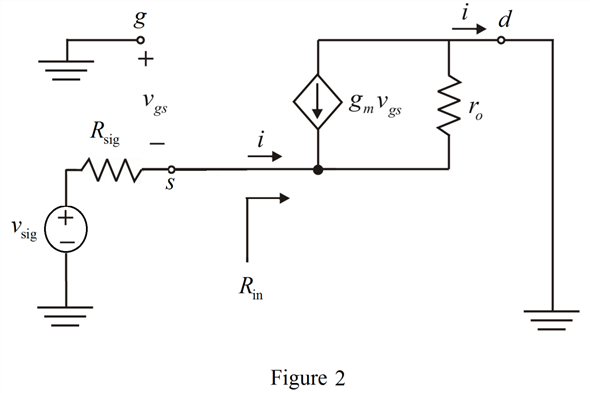
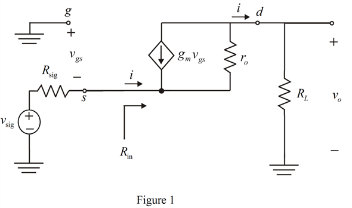
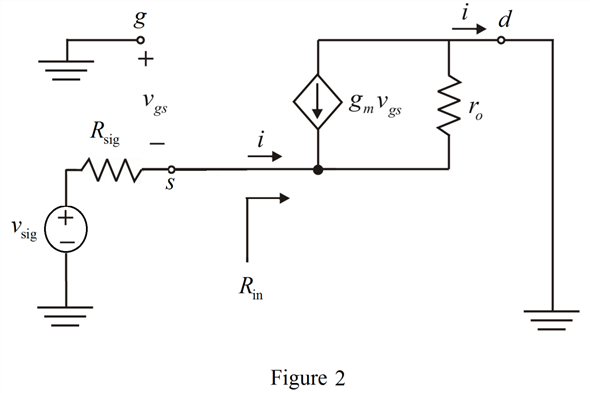
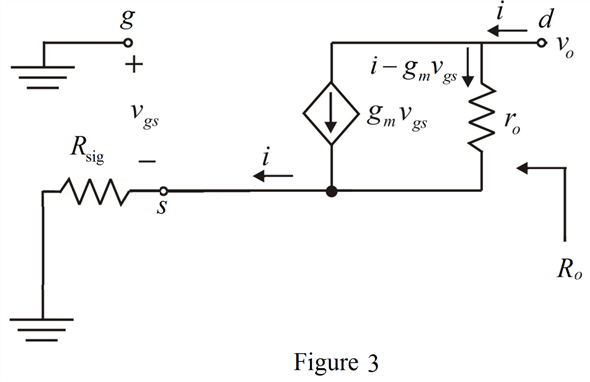

(a)
The short-circuit transconductance  can be found by short-circuiting
can be found by short-circuiting  to ground. Then the equivalent circuit is shown in Figure 2.
to ground. Then the equivalent circuit is shown in Figure 2.

Refer to Figure P7.31 in the textbook for the circuit.
(a)
The small signal equivalent circuit is shown in Figure 1.

(a)
The short-circuit transconductance can be found by short-circuiting to ground. Then the equivalent circuit is shown in Figure 2.

Apply nodal analysis at source node.
…… (1)
From Figure 2, the voltage at source node is,
Substitute for  in equation (1).
in equation (1).
…… (2)
From Figure 2, the current  is,
is,
Substitute for  in equation (2).
in equation (2).
Thus, the short-circuit transconductance is,
The value of  is that of a CG transistor with a resistance
is that of a CG transistor with a resistance  in its source. For calculating
in its source. For calculating  short circuit the input source . The equivalent circuit is shown in Figure 3.
short circuit the input source . The equivalent circuit is shown in Figure 3.

From Figure 3, the voltage  is,
is,
From the circuit, . Substitute this in the equation.
Thus, the output resistance is,
(b)
The intrinsic gain is,
Substitute  for
for  in the equation.
in the equation.
Consider the equation for the short-circuit transconductance.
Substitute  for
for  ,
,  for
for  and
and  for
for  in the equation.
in the equation.
Thus, the short-circuit transconductance is, .
Substitute  for
for  ,
,  for
for  and for
and for  in the equation.
in the equation.
Thus, the output resistance is, .
Refer to Figure P7.32 in the textbook for the equivalent circuit. From the equivalent circuit, the output voltage is,
Substitute  for
for  , for
, for  , and
, and  for
for  in the equation.
in the equation.
Thus, the voltage gain is,